Riparian filter
What the plant does, from the tags the catalogue records against it.
57 plants
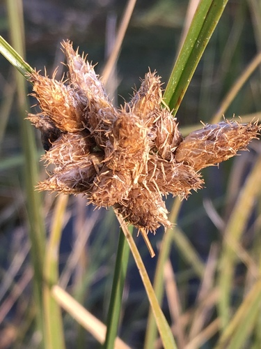
Alkali BulrushBolboschoenus maritimusAlkali Cord GrassSpartina gracilis Alex Abair, some rights reserved (CC BY), uploaded by Alex Abair") American BrooklimeVeronica americana
American BrooklimeVeronica americana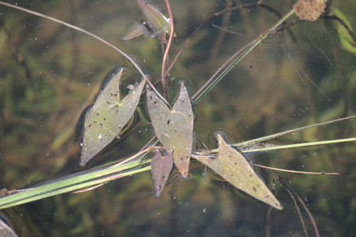
Arum-leaved ArrowheadSagittaria cuneata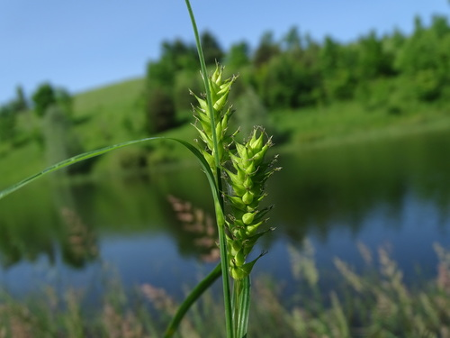
Awned SedgeCarex atherodes naturalist charlie, some rights reserved (CC BY), uploaded by naturalist charlie") Basket WillowSalix petiolaris
Basket WillowSalix petiolaris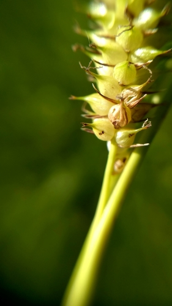
Beaked SedgeCarex rostrata Matt Lavin, some rights reserved (CC BY)") Bluejoint Reed GrassCalamagrostis canadensis
Bluejoint Reed GrassCalamagrostis canadensis Broad-leaved ArrowheadSagittaria latifoliaBroad-leaved Water-plantainAlisma triviale
Broad-leaved ArrowheadSagittaria latifoliaBroad-leaved Water-plantainAlisma triviale Radio Tonreg, some rights reserved (CC BY)") Canada WaterweedElodea canadensis
Canada WaterweedElodea canadensis Andre Hosper, some rights reserved (CC BY), uploaded by Andre Hosper") Common BladderwortUtricularia vulgarisCommon Mare's-tailHippuris vulgarisCommon Scouring-rushEquisetum hyemale
Common BladderwortUtricularia vulgarisCommon Mare's-tailHippuris vulgarisCommon Scouring-rushEquisetum hyemale aarongunnar, some rights reserved (CC BY), uploaded by aarongunnar") Common Tall Manna GrassGlyceria grandis
Common Tall Manna GrassGlyceria grandis Matt Lavin, some rights reserved (CC BY)") Creeping SpikerushEleocharis palustrisCyperus-like SedgeCarex pseudocyperus
Creeping SpikerushEleocharis palustrisCyperus-like SedgeCarex pseudocyperus Dustin Snider, some rights reserved (CC BY), uploaded by Dustin Snider") Dwarf BirchBetula glandulosa
Dwarf BirchBetula glandulosa Jason Hollinger, some rights reserved (CC BY)") Fowl Manna GrassGlyceria striata
Fowl Manna GrassGlyceria striata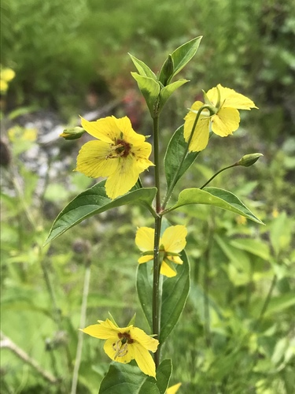
Fringed LoosestrifeLysimachia ciliataGiant Bur-reedSparganium eurycarpum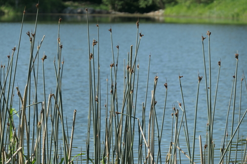
Great BulrushSchoenoplectus acutusIvy-leaved DuckweedLemna trisulcaKnotted RushJuncus nodosusLabrador TeaLedum groenlandicum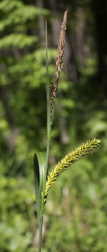
Lakeshore SedgeCarex lacustris davecz2, some rights reserved (CC BY-SA)") Marsh AsterSymphyotrichum boreale
Marsh AsterSymphyotrichum boreale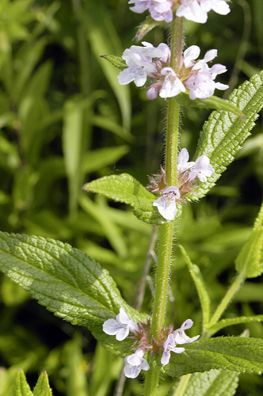
Marsh Hedge NettleStachys pilosa Stan Shebs, some rights reserved (CC BY-SA)") Narrow-leaf WillowSalix exiguaNeedle Spike-rushEleocharis acicularis
Narrow-leaf WillowSalix exiguaNeedle Spike-rushEleocharis acicularis Bob Walker, some rights reserved (CC BY), uploaded by Bob Walker") Pink Monkey FlowerErythranthe lewisii
Pink Monkey FlowerErythranthe lewisii aarongunnar, some rights reserved (CC BY), uploaded by aarongunnar") Porcupine SedgeCarex hystericina
Porcupine SedgeCarex hystericina Jeremy Atherton, some rights reserved (CC BY), uploaded by Jeremy Atherton") River BulrushBolboschoenus fluviatilis
River BulrushBolboschoenus fluviatilis Igor Balashov, some rights reserved (CC BY), uploaded by Igor Balashov") Sago PondweedStuckenia pectinata
Sago PondweedStuckenia pectinata Saline Shooting StarPrimula pauciflora
Saline Shooting StarPrimula pauciflora Harvey Barrison, some rights reserved (CC BY-SA)") Sandbar WillowSalix interiorSartwell's SedgeCarex sartwelliiShort-capsuled WillowSalix brachycarpa
Sandbar WillowSalix interiorSartwell's SedgeCarex sartwelliiShort-capsuled WillowSalix brachycarpa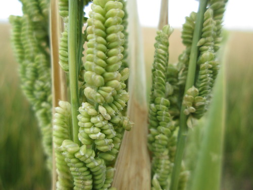
Slough GrassBeckmannia syzigachneSmall Bottle SedgeCarex utriculata Matt Lavin, some rights reserved (CC BY-SA)") Small-fruited BulrushScirpus microcarpus
Small-fruited BulrushScirpus microcarpus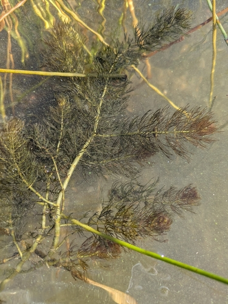
Spiked Water-milfoilMyriophyllum sibiricum Square-stem MonkeyflowerMimulus ringens
Square-stem MonkeyflowerMimulus ringens Tatiana Strus, some rights reserved (CC BY), uploaded by Tatiana Strus") Swamp HorsetailEquisetum fluviatile
Swamp HorsetailEquisetum fluviatile Hladac, some rights reserved (CC BY-SA)") Thinleaf AlderAlnus incana
Thinleaf AlderAlnus incana Douglas Goldman, some rights reserved (CC BY-SA), uploaded by Douglas Goldman") Three-square RushSchoenoplectus pungens
Three-square RushSchoenoplectus pungens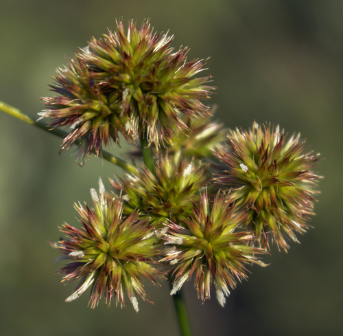
Torrey's RushJuncus torreyiTufted HairgrassDeschampsia cespitosa subsp. cespitosa Tufted Tall Manna GrassGlyceria elataTurned SedgeCarex retrorsa
Tufted Tall Manna GrassGlyceria elataTurned SedgeCarex retrorsa Юлия, some rights reserved (CC BY), uploaded by Юлия") Variegated HorsetailEquisetum variegatumWater ParsnipSium suave
Variegated HorsetailEquisetum variegatumWater ParsnipSium suave mark-groeneveld, some rights reserved (CC BY), uploaded by mark-groeneveld") Water SedgeCarex aquatilis
Water SedgeCarex aquatilis aarongunnar, some rights reserved (CC BY), uploaded by aarongunnar") Wire RushJuncus balticus
Wire RushJuncus balticus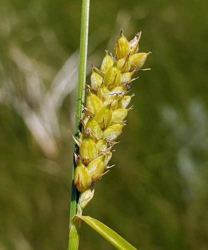
Woolly SedgeCarex pellita Matt Berger, some rights reserved (CC BY), uploaded by Matt Berger") Yellow Monkey FlowerErythranthe guttata
Yellow Monkey FlowerErythranthe guttata gonodactylus, some rights reserved (CC BY), uploaded by gonodactylus") Yellow Pond-lilyNuphar variegata
Yellow Pond-lilyNuphar variegata